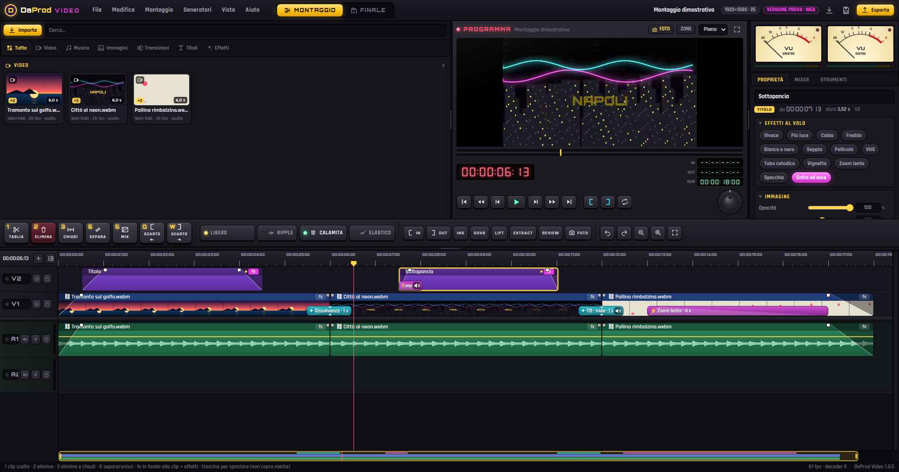
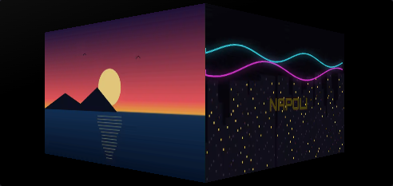
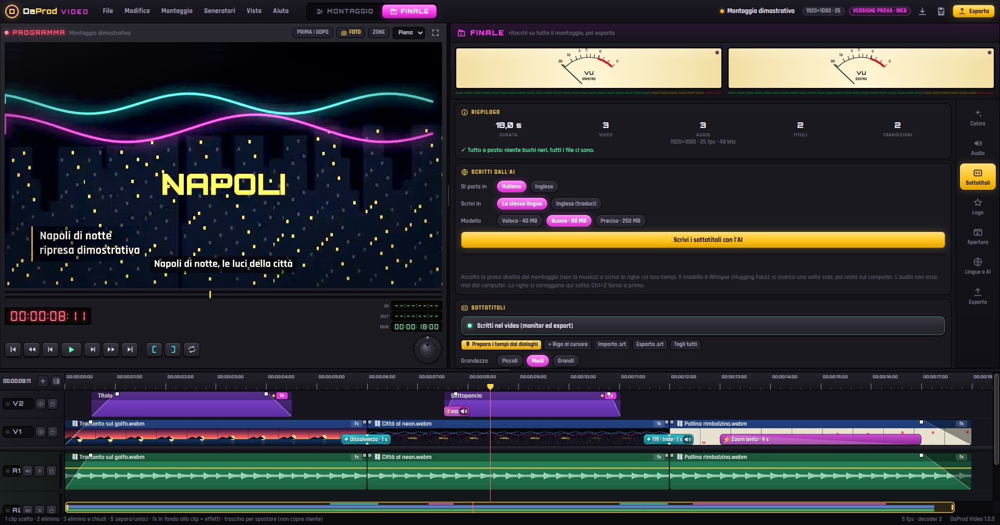

Video, musica, immagini, transizioni, titoli ed effetti: tutto in un posto, in ordine. Passa il mouse su un video e scorre avanti e indietro; + lo mette al cursore.
sala di montaggio · edizione 1.0.0
Un monitor grande, il contenitore dove i video scorrono al passaggio del mouse, la centralina con i tasti grandi, i VU a lancetta e la pagina Finale per il colore di tutto il montaggio. Cursore sul punto, premi 1 e tagli, premi 2 ed elimini. Sotto il cofano WebCodecs, WebGL2 e Rust.

Ispirato alle centraline a nastro e a EDIUS: poche cose, quelle giuste, sempre a portata di dito.
Video, musica, immagini, transizioni, titoli ed effetti: tutto in un posto, in ordine. Passa il mouse su un video e scorre avanti e indietro; + lo mette al cursore.
Sposti una clip e si ferma contro la vicina; la lasci dove è occupato e va su una traccia libera. La rotella va di un fotogramma col suono, 1 taglia le tracce accese e sceglie lo scarto.
La linea gialla del volume sempre in vista: trascinala, doppio clic per un punto, "Abbassa qui". I quadratini in alto sulle clip sono le dissolvenze: tirali. Fade in, fade out, incrocio ed eco si trascinano sulle clip audio.
Effetti a tempo da trascinare sopra una clip: si attaccano da soli all'inizio, alla fine o sul taglio. Lampo, scossa, zoom colpo, glitch, dal nero, zoom lento, camera a mano, bande cinema. Le transizioni si centrano sul taglio: più lunghe, più lente. E hanno il loro suono: whoosh, colpo, zap, da accendere con un clic.
Whisper ascolta i dialoghi in italiano o in inglese e scrive le righe coi loro tempi, anche direttamente in inglese da un parlato italiano. Gira sul tuo computer: l'audio non va da nessuna parte.
I file pesanti dei telefoni e dei generatori (4K, HEVC, fotogrammi chiave radi) diventano da soli una copia leggera per il monitor: il play parte subito, da qualunque punto. L'export usa gli originali.
Un menu a destra con tutto al suo posto: colore automatico e look, audio finale, sottotitoli coi tempi presi dai dialoghi (e .srt), logo sempre in vista, apertura e chiusura, lingue e AI in arrivo. Poi un tasto: esporta.
Il tasto fx in fondo a ogni clip: vivace, più luce, caldo, bianco e nero, pellicola, VHS, zoom lento, specchia. Per l'audio: voce chiara, livella il volume, radio.
Le tendine SMPTE del mixer video (porta, scatola, rombo, iride, orologio, stella, cuore) e gli effetti digitali: spinta, zoom, mosaico, cubo 3D, girata, onda, lampo, luce di pellicola, glitch.
Premi P: il fotogramma sotto il cursore diventa un'immagine nel contenitore, da allungare quanto vuoi. Shift+P fa il fermo immagine al volo.
Contatori a sette segmenti, drop-frame a 29,97, il tastierino numerico che scrive il timecode come in regia, shuttle J K L e manopola jog.
Due strumenti con l'inerzia vera (0 VU = −18 dBFS), il led di picco e il mixer con fader, panorama, muto e solo.
Barre colore SMPTE con tono a 1 kHz, countdown da pellicola col 2-pop, nero, colore, titolatrice con sottopancia, rullo e crawl.
Forma d'onda in IRE e vettorscopio col fosforo verde. Proc amp da TBC: nero, guadagno, croma, fase. Look VHS, pellicola, tubo catodico.
La lista di montaggio che aprono Resolve, Avid, Premiere ed EDIUS. Più l'export MP4, MOV, WebM e WAV, e il fotogramma in PNG.


I numeri in alto sono i tasti di montaggio. Il tastierino numerico scrive il timecode.
| Spazio | play / stop | J K L | shuttle indietro, fermo, avanti (ripeti per accelerare) |
| I O | attacco e stacco | Z X | solleva ed estrai fra attacco e stacco |
| , . | inserisci / sovrascrivi dalla sorgente | ↑ ↓ | taglio precedente / successivo |
| rotella | un fotogramma per scatto, col suono | Ctrl+rotella | zoom della timeline |
| Tab | monitor: sorgente ↔ montaggio | F9 | pagina Finale (colore, audio, sottotitoli, logo, esporta) |
| R | ripple acceso / spento | Ins | modo libero / inserisci |
| F | abbina fotogramma | Ctrl+Z | annulla (fino a 200 passi) |
Le app sono fatte con Tauri 2 (Rust): leggere e poche decine di MB. Ogni versione nuova esce da sola su GitHub.
Tutte le versioni: release su GitHub
Nel browser il banco è completo, ma i file restano nel browser: per riaprire un progetto bisogna ridare il permesso sui file (Chrome ed Edge) o ricollegarli. Nell'app i file si leggono dal disco con Rust, l'export si scrive mentre esce anche per ore di girato, e il montaggio riparte da dove eri rimasto.